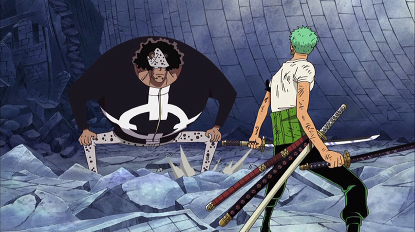

スリラーバーク編
バナロ島の決闘
〝仲間殺し〟を償わせるため、黒ひげを追っていたエースは、バナロ島でついにその姿をとらえる。激突する二人。〝悪魔の実〟の能力者の力を無効化する、黒ひげの〝ヤミヤミ〟の力がエースを追い詰める…。
ブルック登場
次なる目的地・魚人島への航海の途中、霧深い海域で麦わらの一味は〝ゴースト船〟に遭遇する。船に乗っていたのは、ブルックと名乗る謎のガイコツ。その正体はかつて〝鼻唄のブルック〟として名を馳せた海賊で、数十年前に一度死に、その後〝ヨミヨミの実〟の力で蘇った〝復活人間〟であった。
一目で気に入ったルフィが仲間に誘うと、ブルックもこれをあっさりOK。だがブルックは一つ問題を抱えていた。彼は何者かによって〝影〟を奪われていたのだ。ルフィ達がブルックから話を聞いていたその時、サニー号が突如現れた〝ゴースト島〟、スリラーバークによって包囲されてしまう。
ゴースト島の冒険
影を取り戻す為、単身スリラーバークに乗り込んだブルックを追おうと、上陸準備を進めるルフィ達。そのさなか、ナミ、ウソップ、チョッパーの３人が突如姿を消してしまう。ナミ達を探す為、島に上陸したルフィ達を待っていたのは、奇妙な姿をしたゾンビ達だった。
難なくゾンビを退けたルフィ達は、出会った老人からこのスリラーバークの主が〝王下七武海〟の一人、ゲッコー・モリアである事、そしてモリアこそが人々から〝影〟を奪った張本人である事を聞かされる。モリアは〝カゲカゲの実〟の能力で、奪った影をゾンビに入れ、自らの兵士としていたのだ。
麦わらの一味はモリアに狙われ、サンジ、ゾロ、ルフィは影を奪われてしまう。さらに、500年前に生き、歴史上で唯一“魔人”と呼ばれた狂戦士オーズから作ったゾンビにルフィの影を入れられ、オーズが蘇ってしまった。
ナイトメア・ルフィ
ルフィはオーズの相手を仲間に任せ、単身モリアを追うも、騙されて森へと誘い出されてしまう。そこでルフィは、同じくモリアに影を奪われた女海賊、ローラから打倒モリアの秘策を授かる。それは他人の影を体に取り込み、パワーアップするというものだった。
その頃、ゾロ達はオーズ相手に苦戦を強いられていた。ナミが無事合流を果たしたものの、モリアに操られ、パワーアップしたオーズの力は絶大。さらにロビンまでもが影を奪われてしまう。次々と倒れていく仲間達。この絶体絶命のピンチに、ルフィが駆けつける。100人分の影を取り込み、〝ナイトメア・ルフィ〟と化したルフィは、その力でオーズを圧倒。仲間との息の合った連携でついにこれを撃破する。
形勢不利と見たモリアは、ルフィに対抗すべく、1000体の影を取り込む。夜明けが迫る中、激闘を繰り広げるルフィとモリア。時間切れかと思われたそのとき、ルフィによってモリアは倒され、全ての影は持ち主のもとへと還っていった。
麦わらの一味抹殺指令
 しかし、一息つく間もなく、麦わらの一味の前に〝王下七武海〟バーソロミュー・くまが姿を見せる。世界政府がくまに命じた特命は、「麦わらの一味を含む島に残る全員の抹殺」。モリアとの激戦を終え、未だ目覚めぬルフィを前に、くまは全員の命と引き換えにルフィの首を要求する。だが一味の仲間はもちろん、その場にいた全員がこれを拒否。くまの規格外の強さを前に、仲間達が倒れていく中、今の自分達では勝てないと痛感したゾロは、自分の命と引き換えに仲間達を見逃してほしいとくまに懇願する。
これに対しくまは、一味を見逃す条件として「この戦いでルフィが受けた苦痛を、全てゾロが代わりに受ける」ことを要求。ゾロは命がけでこれを果たし、見届けたくまは島から姿を消した。
遠い日の約束
戦いの後の宴で、ブルックは50年前に別れた仲間のクジラ・ラブーンが今でも自分達の帰りを待っている事を知る。ブルックはラブーンとの再会を心に誓い、麦わらの一味の仲間入りを果たす。
スリラーバークを発つ日、ルフィが持っていたエースのビブルカードに異変が。それはエースの命が消えかけようとしている事を意味していた。そして一味は〝赤い土の大陸（レッドライン）〟に到達。これで〝偉大なる航路（グランドライン）〟も残すところ、あと半周となった。